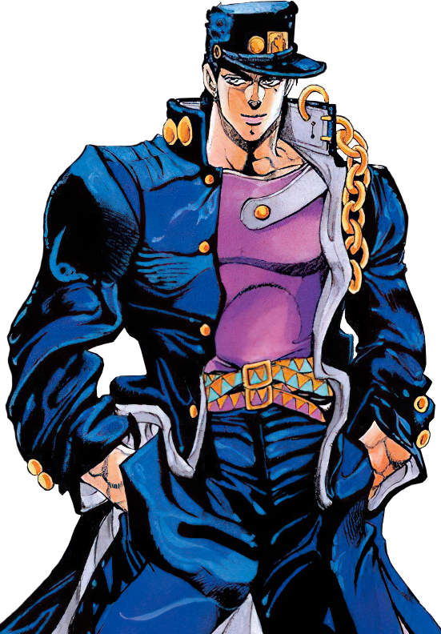
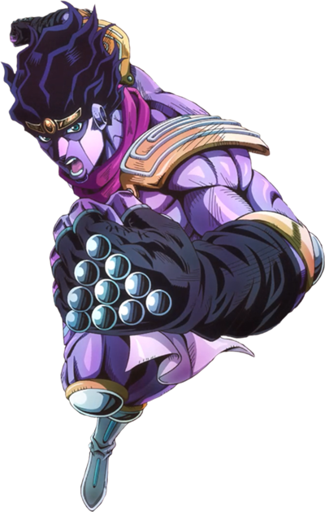

Jotaro Kujo é o protagonista da parte 3 de JoJo's Bizarre Adventure, Stardust Crusaders, e um dos personagens mais icônicos da franquia. Ele é um estudante japonês com ascendência britânica/italiana, membro da família Joestar, conhecido por seu Stand "Star Platinum", força extrema e personalidade "delinquente" de bom coração.

STAR PLATINUM

Star Platinum é o stand de curto alcance de Jotaro Kujo, protagonista da Parte 3 de JoJo's Bizarre Adventure (Stardust Crusaders). Conhecido por sua força, velocidade e precisão sobre-humanas, ele é um dos stands mais poderosos da série, capaz de parar o tempo. O nome foi dado por Avdol baseado na carta de tarot "A Estrela".